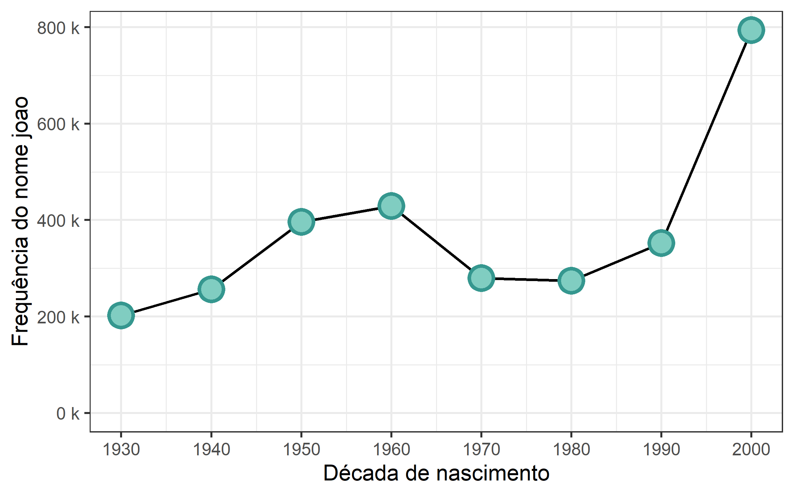
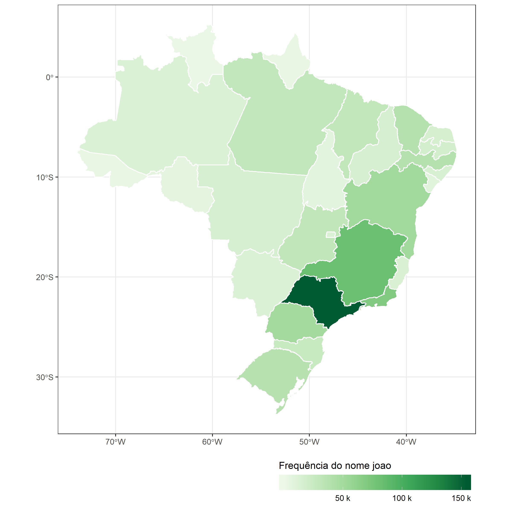
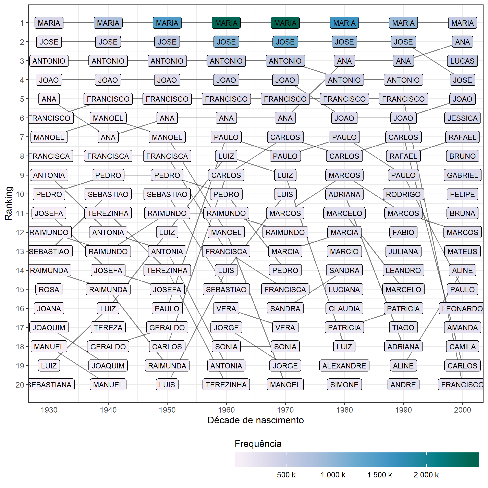

The goal of brnome is to …
Installation
You can install the development version from GitHub with:
Example
This is a basic example which shows you how to solve a common problem:
library(brnome)
library(brmap)
library(tidyverse)
joao_freq <- brnome_freq(nome = "joao")
joao_freq
#> # A tibble: 9 x 7
#> nome sexo localidade_cod localidade_nome nascimento_peri~ nascimento_deca~
#> <chr> <lgl> <lgl> <chr> <chr> <int>
#> 1 JOAO NA NA Brasil [ , 1930] 1930
#> 2 JOAO NA NA Brasil [1930, 1940] 1930
#> 3 JOAO NA NA Brasil [1940, 1950] 1940
#> 4 JOAO NA NA Brasil [1950, 1960] 1950
#> 5 JOAO NA NA Brasil [1960, 1970] 1960
#> 6 JOAO NA NA Brasil [1970, 1980] 1970
#> 7 JOAO NA NA Brasil [1980, 1990] 1980
#> 8 JOAO NA NA Brasil [1990, 2000] 1990
#> 9 JOAO NA NA Brasil [2000, 2010] 2000
#> # ... with 1 more variable: frequencia <int>brnome_freq(nome = "joao", sexo = "m")
#> # A tibble: 9 x 7
#> nome sexo localidade_cod localidade_nome nascimento_peri~ nascimento_deca~
#> <chr> <chr> <lgl> <chr> <chr> <int>
#> 1 JOAO M NA Brasil [ , 1930] 1930
#> 2 JOAO M NA Brasil [1930, 1940] 1930
#> 3 JOAO M NA Brasil [1940, 1950] 1940
#> 4 JOAO M NA Brasil [1950, 1960] 1950
#> 5 JOAO M NA Brasil [1960, 1970] 1960
#> 6 JOAO M NA Brasil [1970, 1980] 1970
#> 7 JOAO M NA Brasil [1980, 1990] 1980
#> 8 JOAO M NA Brasil [1990, 2000] 1990
#> 9 JOAO M NA Brasil [2000, 2010] 2000
#> # ... with 1 more variable: frequencia <int>brnome_freq(nome = "joao", localidade_cod = 5103403)
#> # A tibble: 9 x 7
#> nome sexo localidade_cod localidade_nome nascimento_peri~ nascimento_deca~
#> <chr> <lgl> <int> <chr> <chr> <int>
#> 1 JOAO NA 5103403 Cuiabá [ , 1930] 1930
#> 2 JOAO NA 5103403 Cuiabá [1930, 1940] 1930
#> 3 JOAO NA 5103403 Cuiabá [1940, 1950] 1940
#> 4 JOAO NA 5103403 Cuiabá [1950, 1960] 1950
#> 5 JOAO NA 5103403 Cuiabá [1960, 1970] 1960
#> 6 JOAO NA 5103403 Cuiabá [1970, 1980] 1970
#> 7 JOAO NA 5103403 Cuiabá [1980, 1990] 1980
#> 8 JOAO NA 5103403 Cuiabá [1990, 2000] 1990
#> 9 JOAO NA 5103403 Cuiabá [2000, 2010] 2000
#> # ... with 1 more variable: frequencia <int>brnome_freq(nome = "joao", localidade_cod = 51)
#> # A tibble: 9 x 7
#> nome sexo localidade_cod localidade_nome nascimento_peri~ nascimento_deca~
#> <chr> <lgl> <int> <chr> <chr> <int>
#> 1 JOAO NA 51 Mato Grosso [ , 1930] 1930
#> 2 JOAO NA 51 Mato Grosso [1930, 1940] 1930
#> 3 JOAO NA 51 Mato Grosso [1940, 1950] 1940
#> 4 JOAO NA 51 Mato Grosso [1950, 1960] 1950
#> 5 JOAO NA 51 Mato Grosso [1960, 1970] 1960
#> 6 JOAO NA 51 Mato Grosso [1970, 1980] 1970
#> 7 JOAO NA 51 Mato Grosso [1980, 1990] 1980
#> 8 JOAO NA 51 Mato Grosso [1990, 2000] 1990
#> 9 JOAO NA 51 Mato Grosso [2000, 2010] 2000
#> # ... with 1 more variable: frequencia <int>joao_estado <- localidades %>%
filter(tipo == "Estado") %>%
mutate(
freq = map(
localidade,
~brnome_freq(nome = "joao", localidade_cod = .x)
)
) %>%
select(freq) %>%
unnest()
joao_estado
#> # A tibble: 243 x 7
#> nome sexo localidade_cod localidade_nome nascimento_peri~ nascimento_deca~
#> <chr> <lgl> <int> <chr> <chr> <int>
#> 1 JOAO NA 11 Rondônia [ , 1930] 1930
#> 2 JOAO NA 11 Rondônia [1930, 1940] 1930
#> 3 JOAO NA 11 Rondônia [1940, 1950] 1940
#> 4 JOAO NA 11 Rondônia [1950, 1960] 1950
#> 5 JOAO NA 11 Rondônia [1960, 1970] 1960
#> 6 JOAO NA 11 Rondônia [1970, 1980] 1970
#> 7 JOAO NA 11 Rondônia [1980, 1990] 1980
#> 8 JOAO NA 11 Rondônia [1990, 2000] 1990
#> 9 JOAO NA 11 Rondônia [2000, 2010] 2000
#> 10 JOAO NA 12 Acre [ , 1930] 1930
#> # ... with 233 more rows, and 1 more variable: frequencia <int>joao_estado %>%
group_by(nascimento_decada) %>%
summarise(frequencia = sum(frequencia)) %>%
ggplot(aes(nascimento_decada, frequencia)) +
geom_line(size = 1) +
geom_point(shape = 21, color = "#35978f", fill = "#80cdc1", size = 7, stroke = 2) +
labs(x = "Década de nascimento", y = "Frequência do nome joao") +
scale_x_continuous(breaks = seq(1900, 2020, 10)) +
scale_y_continuous(limits = c(0, NA), labels = scales::unit_format(unit = "k", scale = 1e-3)) +
theme_bw(16)
joao_estado %>%
left_join(brmap_estado_simples, by = c("localidade_nome" = "estado_nome")) %>%
st_as_sf() %>%
ggplot(aes(fill = frequencia)) +
geom_sf(color = "white") +
labs(fill = "Frequência do nome joao") +
scale_fill_distiller(
palette = "Greens",
direction = 1,
labels = scales::unit_format(unit = "k", scale = 1e-3)
) +
theme_bw() +
theme(legend.position = "bottom", legend.justification = "right") +
guides(fill = guide_colorbar(barwidth = 15, title.position = "top"))
rank_decada <- map_dfr(seq(1930, 2000, 10), ~brnome_rank(decada = .x))
rank_decada %>%
ggplot(aes(decada, ranking, fill = frequencia, label = nome)) +
geom_line(aes(group = nome), alpha = 0.5) +
geom_label(color = "black", size = 3) +
#facet_wrap(~sexo, labeller = labeller(sexo = c("F" = "Feminino", "M" = "Masculino"))) +
labs(x = "Décade de nascimento", y = "Ranking", fill = "Frequência") +
scale_x_continuous(breaks = seq(1930, 2000, 10)) +
scale_y_reverse(breaks = 1:20) +
scale_fill_distiller(
palette = "PuBuGn", direction = 1,
labels = scales::unit_format(unit = "k", scale = 1e-3)
) +
theme_bw() +
theme(legend.position = "bottom", legend.justification = "right") +
guides(fill = guide_colorbar(barwidth = 20, title.position = "top"))